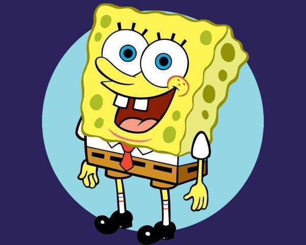

我？我~我！我。（暂无较合适的照片，用海绵宝宝代替）
底部 关于我的二三事 回到顶部
我叫邱罗祥，就读于杭州电子科技大学信息工程学院，本科专业是电子商务专业。 本人性格热情开朗，待人友好，为人诚实谦虚。工作勤奋，认真负责，能吃苦耐劳，尽职尽责，有耐心。具有亲和力，平易近人，善于与人沟通。 学习刻苦认真，成绩优秀，名列前茅。品学兼优，连续三年获得学院奖学金。在此期间还参加过学院举办的电商设计大赛，在期间担任组织者并负责文案和程序编写工作，团队荣获学院竞赛二等奖/

在学习之外，我也积极参与课外实践，这些在之后的“我的经历中可以看到”。
待补充部分
回到顶部
等待补充部分。。。
。